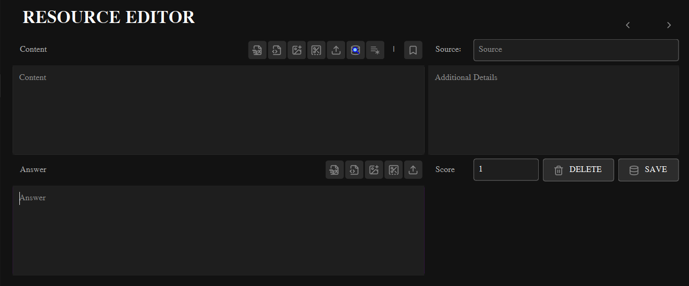
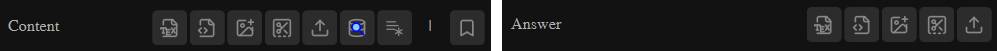
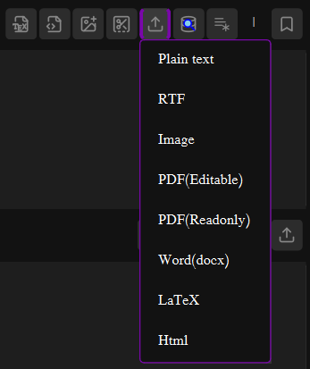

Educational Resource Editor
Page Version: 1.0
The Educational Resource Editor is a powerful, multi-format content creation and management tool designed specifically for educators.
It supports a wide range of document types including Plain Text, Rich Text (RTF), HTML, LaTeX, Images, PDFs, and Word documents.
The editor provides a unified interface where teachers can create, edit, format, and manage educational content with precise control
over layout and formatting to ensure compatibility with standard A4 paper output.

Educational Resource Editor Interface
Table of Contents
Interface Overview
Primary Workspace
The editor is organized into two main content areas:
- Content Section: Primary area for creating and editing educational questions, problems, or learning materials
- Answer Section: Dedicated area for creating answer keys, solutions, or explanatory notes
Control Panels
- Content Toolbar: Formatting and import tools specific to the content section
- Answer Toolbar: Formatting and import tools specific to the answer section
- Metadata Panel: Right-side panel for resource metadata and navigation
Universal Width Constraint: All content areas are fixed to a width of 6.19 inches (converted to pixels based on DPI settings). This ensures all content fits properly within the A4 paper layout during printing or PDF generation.
Key Interface Components
Navigation Controls
- Previous/Next: Arrow buttons to navigate between existing resources
- ID Display: Shows current resource ID or "(New item)" for new content
- Database Search: Search field to load specific resources by ID
Metadata Panel
- Source: Origin or category of the educational resource
- Score: Maximum points for the resource (default: 1)
- Additional Details: Notes, remarks, or special instructions
Action Buttons
- Delete: Permanently remove current resource from database
- Save: Save or update resource in the database
- Clear: Start a new resource (clears all fields)
The editor supports multiple document formats, each with specific handling characteristics:
📝 Plain Text
- Extension:
.txt
- Editing: Direct text editing in QTextEdit
- Storage: Converted to HTML format using
toHtml()
- Restoration: Loaded using
setHtml()
- Best For: Simple questions, instructions, notes
🎨 Rich Text (RTF)
- Extension:
.rtf
- Editing: Full rich text formatting support
- Storage: Converted to HTML format using
toHtml()
- Restoration: Loaded using
setHtml()
- Features: Formatting, images, tables, advanced layout
🌐 HTML
- Extension:
.html, .htm
- Editing: Direct HTML source code editing
- Storage: Saved as plain text using
toPlainText()
- Restoration: Loaded using
setPlainText()
- Processing: Use "Run HTML" to render in editor
📐 LaTeX
- Extension:
.tex
- Editing: Direct LaTeX source code editing
- Storage: Saved as plain text using
toPlainText()
- Restoration: Loaded using
setPlainText()
- Processing: Use "Run LaTeX" to compile and render
🖼️ Image
- Extensions:
.png, .jpg, .jpeg, .bmp, .gif
- Handling: Converted to Base64 and embedded in HTML
- Storage: Saved as HTML with
<img> tag
- Resizing: Automatically scaled to 6.19 inches width
- Insertion: Can insert into existing content or replace
📄 PDF
- Extension:
.pdf
- Modes: Editable (HTML extraction) or Read-only (image)
- Editable Mode: Extracts text as HTML for editing
- Read-only Mode: Converts first page to Base64 image
- Limitation: Only first page is processed
📘 Word (DOCX)
- Extension:
.docx
- Processing: Converted to HTML using pypandoc
- Limitation: Some formatting may be lost in conversion
- Status: Basic support (may require additional setup)
Important Note: LaTeX and HTML documents are saved as raw source code. They must be processed ("Run LaTeX" or "Run HTML") before they can be properly displayed or distributed. Unprocessed LaTeX/HTML will appear as source code in generated materials.
Content Creation Tools
Toolbar Icons and Functions
TeX - LaTeX tools (new script, compile)
🌐 - HTML tools (new script, render)
🖼️+ - Insert image into existing content
✂️ - Screen capture/snipping tool
📤 - Upload file (replaces content)
🔍 - Search database by ID
📝 - Clear content (start new)
🔖 - Add [MARKED] bookmark
Content Toolbar (Top)
Located above the Content Editor, provides tools specifically for the main content area:
- LaTeX Menu: Create new LaTeX document or compile existing LaTeX
- HTML Menu: Create new HTML template or render existing HTML
- Image Insert: Add image to current cursor position
- Screen Capture: Capture area from screen and insert as image
- Upload Menu: Replace entire content with uploaded file
- Database Search: Load existing resource by ID
- New Content: Clear all fields for new resource
- Bookmark: Add [MARKED] tag to Additional Details
Answer Toolbar (Bottom)
Located above the Answer Editor, provides identical tools for the answer section:
- Same toolset as Content Toolbar but applies to Answer Editor
- Independent operation - changes in Content don't affect Answer
- Useful for creating separate answer keys or solution notes
Screen Capture Tip: The snipping tool automatically hides the main window, allowing you to capture any part of your screen. The captured image is automatically inserted at the current cursor position and resized to fit the 6.19-inch content width.

Content (Top) and Answer (Bottom) Toolbars
File Management
Uploading Files
The Upload menu (📤 button) provides access to all supported file types:
Image Upload
- Insert Mode (+): Adds image at cursor position
- Replace Mode: Replaces entire content with image
- Auto-resize: Images scaled to 6.19 inches width
- Format: Converted to Base64 and embedded in HTML
PDF Upload
- Editable Mode: Extracts text as HTML (for editing)
- Read-only Mode: Converts to image (for display)
- Page Limit: Only first page is processed
- Best Practice: Use editable for text, read-only for complex layouts
Text-based Formats
- Plain Text: Loaded and converted to HTML
- RTF: Preserves formatting through HTML conversion
- LaTeX/HTML: Loaded as raw source code
- Word (DOCX): Converted to HTML (basic support)

Uploading Files options
File Type Detection and Handling
The editor automatically detects file types and applies appropriate processing:
- Extension-based: File handling determined by extension
- Smart Conversion: Plain text and RTF converted to HTML for editing
- Raw Mode: LaTeX and HTML preserved as source code
- Image Processing: Automatic Base64 encoding and width constraint
PDF Limitations: Only the first page of PDF files is processed. For multi-page documents, consider splitting into separate resources or using image mode for specific pages.
Database Operations
Navigation and Search
Record Navigation
- Previous (◀): Load previous resource in database
- Next (▶): Load next resource in database
- ID Display: Shows current resource ID or "New item"
- Auto-detection: Smart format detection on load
Database Search
- Search Field: Enter specific resource ID
- Quick Access: Dropdown menu with search field
- Format Detection: Automatic detection of stored format
- Error Handling: Clear messages for missing records
Data Management
- Save: Insert new or update existing records
- Delete: Remove current record with confirmation
- Clear: Reset all fields for new content
- Auto-ID: New records receive auto-generated ID
Storage Strategy
The editor uses intelligent storage based on content type:
Storage Logic:
1. Plain Text & RTF → Converted to HTML using toHtml()
2. HTML & LaTeX → Saved as raw text using toPlainText()
3. Images → Converted to Base64 and embedded in HTML
4. All content → Stored with fixed width constraint (6.19 inches)
5. Format detection → Uses helper.is_rtf() on load
Bookmark Feature
The 🔖 bookmark button adds a [MARKED] tag to Additional Details:
- Purpose: Flag resources needing review before distribution
- Usage: Click to insert
[MARKED] at beginning of Additional Details
- Workflow: Resources with
[MARKED] should be reviewed before use
- Visibility: The tag is visible in Educational Resources View
Data Integrity: The editor maintains data integrity through automatic format detection. When loading resources, it checks if content contains RTF/HTML formatting and applies the appropriate restoration method (setHtml() for formatted content, setPlainText() for raw source code).
Paper Layout System
A4 Paper Constraints
All content is designed to fit within A4 paper dimensions with proper margins:
A4 Paper Layout (210mm × 297mm / 8.27in × 11.69in)
0.5 inch Margins (Left & Right)
Column 1
0.54 in
CONTENT AREA
6.19 inches (157mm)
Fixed width for all educational content
Column 3
0.54 in
0.5 inch Margins (Left & Right)
Width Calculation
The content width is calculated based on DPI (Dots Per Inch) settings:
- Paper Width: 8.27 inches (210mm)
- Margins: 0.5 inches each side (total 1 inch)
- Side Columns: 0.54 inches each (total 1.08 inches)
- Content Width: 8.27 - 1.0 - 1.08 = 6.19 inches
- Pixel Conversion: 6.19 × DPI = content width in pixels
Consistent Output: The fixed 6.19-inch width ensures all educational resources maintain consistent formatting when printed or converted to PDF. Images and other content are automatically scaled to this width, guaranteeing proper alignment in the final output.
HTML Template Structure
Generated HTML content includes proper width constraints:
<!DOCTYPE HTML PUBLIC "-//W3C//DTD HTML 4.0//EN" "http://www.w3.org/TR/REC-html40/strict.dtd">
<html lang="en">
<head>
<meta charset="UTF-8" name="viewport" content="width=device-width, initial-scale=1.0">
</head>
<body style="width:{app_context.EDU_ITEM_PIXELS}px;">
<main>
<b>Add here main content.</b>
</main>
</body>
</html>
Advanced Features
LaTeX Processing
The editor includes built-in LaTeX compilation capabilities:
- Template Generation: Creates properly structured LaTeX documents
- Compilation: Uses xepersian engine for Persian/English support
- Output: Generates PDF and converts to HTML for display
- Font Support: Default Yas font for Persian text
- Error Handling: Compilation errors are captured and displayed
Screen Capture Integration
The snipping tool provides seamless screen capture functionality:
- Full-screen Mode: Temporarily hides editor for clean capture
- Automatic Insertion: Captured image inserted at cursor position
- Auto-scaling: Images resized to fit content width
- Base64 Encoding: Direct embedding without file saving
- Cancellation Support: Can cancel capture without insertion
Format Detection Algorithm
Intelligent detection of content format on load:
Detection Logic (helpers.is_rtf()):
1. Check for HTML meta tags (qrichtext, viewport)
2. Look for HTML/XML doctype declarations
3. Detect RTF formatting markers
4. Identify LaTeX document structure
5. Fallback: Plain text detection
Result: Apply setHtml() for formatted content, setPlainText() for raw source
Error Handling and User Feedback
Notification System
- Success Messages: Green notifications for successful operations
- Error Messages: Red notifications with specific error details
- Warning Dialogs: Confirmation prompts for destructive actions
- Position: Bottom-right corner notifications
Validation
- Score Validation: Numeric score checking
File Format Validation: Supported format checking
- Database Validation: Connection and query error handling
- Content Validation: Empty content warnings
Prerequisites for Advanced Features:
1. LaTeX: Requires LaTeX distribution (TeX Live, MiKTeX) with xepersian package
2. Word Documents: Requires pypandoc and Pandoc installation
3. PDF Processing: Requires PyMuPDF (fitz) library
4. Screen Capture: Requires proper screen permissions
Best Practices:
1. Use Plain Text for simple questions and instructions
2. Use RTF for formatted text with images and tables
3. Use LaTeX for mathematical content and formal documents
4. Use HTML for web-based content and complex layouts
5. Always "Run LaTeX" or "Run HTML" before saving if using those formats
6. Use the [MARKED] bookmark for resources needing review
7. Regularly save work to avoid data loss